Wired Artikel
Ranglisten Gesamtüberblick
Seit Wired 2.0 gibt es statt 12 nun 20 Ranglisten. Diese können aufgrund der Menge schnell für Verwirrung sorgen. Daher folgt jetzt ein Gesamtüberblick (Diese Farbe zeigt Neuerungen seit Wired 2.0 an).:
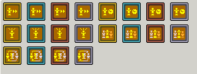
Alle 20 Ranglisten-Wireds im BC
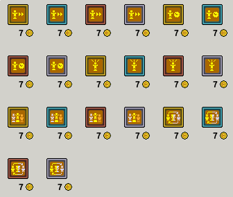
Alle 20 Ranglisten-Wireds im Katalog
Allgemeine Fakten
- Highscores besitzen maximal 50 (früher 15) freie Plätze.
- Jeder Platz kann mehrere Habbos innerhalb eines Teams beinhalten.
- Je mehr Punkte oder Siege ein Team hat, desto höher ist seine Positionierung.
- Habbos, die unter Platz 50 positioniert sind werden nach jedem user-leeren Raumreload gelöscht.
- Alle Habbos in einer Teamfarbe werden nebeneinander aufgelistet, während Habbos in verschiedenen Teamfarben untereinander aufgelistet werden.
- Bei den "meiste Siege" Ranglisten wird bei unentschieden jetzt grundsätzlich derjenige eingetragen, der auch im Spiel (Freeze/Banzai) als automatischer Gewinner hervorgeht. Dabei gilt folgendes (dominierende User werden eingetragen und winken):
1. Wer zuerst die Punktzahl erreicht dominiert und erhält den Sieg (User winkt).
2. Wer eine höhere Punktzahl hatte, diese aber abgezogen werden, sodass ein Punktegleichstand entsteht, dominiert, selbst wenn er nicht die Endpunktzahl zuerst erreicht hatte (User winkt).
3. Wenn Punkte gleichzeitig erhalten wurden, dominiert die festgelegte Team-Reihenfolge: 1. Rot, 2. Grün, 3. Blau, 4. Gelb (User winkt). - Je nach Rangliste gibt es täglich, wöchentlich, monatlich oder niemals einen Resett (= alle Einträge werden gelöscht), der um 1:00 oder 2:00 Uhr Nachts stattfindet (Sommer-/Winterzeit), außer es wird mit dem Command :resetscores zurückgesetzt (für Raumbesitzer und Gruppenadmins möglich).
Voraussetzungen für einen Ranglisteneintrag:
- Es muss sich um einen oder mehrere Habbo User handeln (keine Bots oder Haustiere).
- Der oder die User müssen sich in einem Team befinden (Rot, Grün, Blau oder Gelb).
- Der Spiel-Timer (z. B. Countdown-Timer) muss starten, bevor Punkte gegeben werden.
- Während der Spiel-Timer läuft, muss das Team Punkte erhalten durch z. B. Wireds, Blobs etc.
- Sobald der Spiel-Timer zuende gelaufen ist oder gestoppt wurde, wird das Team einen Eintrag erhalten.
Besonderheiten zu den neuen Zeit-Ranglisten:
Eingetragen wird...
Eingetragen wird...
- wenn ein Habbo sich in einem Team befindet
- wenn ein Zähler/Timer endet
- wenn der User seine vorhandene Zeit übertrifft (je nach Rangliste kürzere oder längere Zeit).
- unabhängig von den Punkten
Highscore, meiste Siege
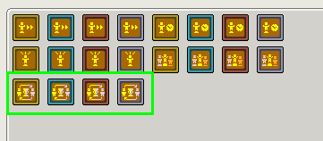
Zu finden im markierten Bereich (BC)
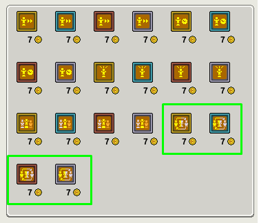
Zu finden im markierten Bereich (Katalog)
Besonderheit: Diese Ranglisten notieren das Team mit den meisten Spielpunkten und fügen der Anzeige +1 Sieg hinzu. Die Punkte selbst werden nicht gespeichert, nur die Siege werden angezeigt.
In diesem Video erfährst du, wie man eine grundlegende Highscore Einstellung vornehmen kann.
In diesem Video erfährst du, wie man eine grundlegende Highscore Einstellung vornehmen kann.
Highscore-Classic
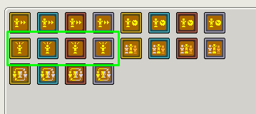
Zu finden im markierten Bereich (BC)
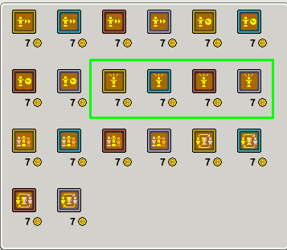
Zu finden im markierten Bereich (Katalog)
Besonderheit: Diese Ranglisten notieren jedes Team, welches im Spiel Punkte gemacht hat. Verlierer und Gewinner werden notiert und ihr Punktestand wird gespeichert. Hinweis: Jeder einzelne Punktestand pro Spielrunde wird extra eingetragen.
In diesem Video erfährst du, wie es möglich ist, jedem Team einen Eintrag zu geben mit je unterschiedlichen Punkten für verschiedene Plätze - 1. 2. 3.
In diesem Video erfährst du, wie es möglich ist, jedem Team einen Eintrag zu geben mit je unterschiedlichen Punkten für verschiedene Plätze - 1. 2. 3.
Highscore pro Team
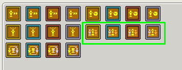
Zu finden im markierten Bereich (BC)
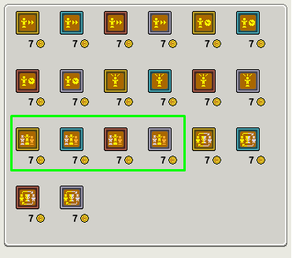
Zu finden im markierten Bereich (Katalog)
Besonderheit: Diese Ranglisten notieren jedes Team, welches im Spiel Punkte gemacht hat. Verlierer und Gewinner werden notiert und ihr Punktestand wird gespeichert. Hinweis: Jede Team-Zusammensetzung erhält einen einzigen Eintrag und der Punktestand wird nur überschrieben, wenn das Team ihr höchstes Punktergebnis überbietet. Das diese Rangliste den höchsten Punktwert behält ist eine Neuerung.
In diesem Video erfährst du, wie man die 40 Punkte vom ByeBye Boden umgehen kann.
In diesem Video erfährst du, wie man die 40 Punkte vom ByeBye Boden umgehen kann.
Highscore Schnellste Zeit
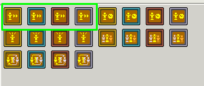
Zu finden im markierten Bereich (BC)
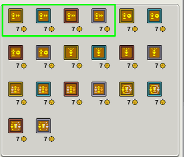
Zu finden im markierten Bereich (Katalog)
Besonderheit: Diese Ranglisten notieren User, die sich im Team befinden. Wenn der Timer endet, wird die Zeit eingetragen. Je kürzer die Zeit desto besser ist die Platzierung. Das Team behält ihre kürzeste Zeit, bis diese vom selben Team übertroffen werden.
In diesem letzten Video erfährst du, wie man pausierte Zeit anzeigen kann, die nicht in die Rangliste aufgenommen wird.
In diesem letzten Video erfährst du, wie man pausierte Zeit anzeigen kann, die nicht in die Rangliste aufgenommen wird.
Highscore Längste Zeit
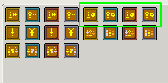
Zu finden im markierten Bereich (BC)
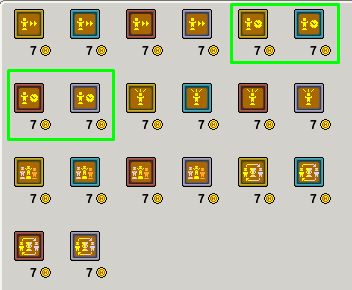
Zu finden im markierten Bereich (Katalog)
Besonderheit: Diese Ranglisten notieren User, die sich im Team befinden. Wenn der Timer endet, wird die Zeit eingetragen. Je länger die Zeit desto besser ist die Platzierung. Das Team behält ihre längste Zeit, bis diese vom selben Team übertroffen werden.
Orientierung der Namensbezeichnungen
Richtige Bezeichnung:
Im Katalog werden die Ranglisten immer mit dem richtigen Namen aufgeführt. Es gibt auch eine alternative Bezeichnung, die auftaucht, wenn man den Highscore im Raum aktiviert hat, die ebenfalls richtig ist:
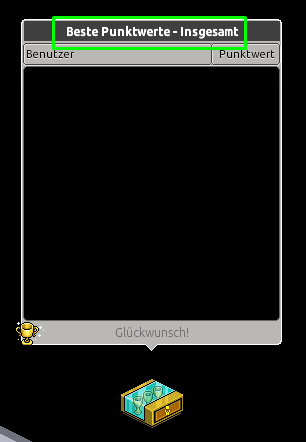
Alternativer Wired-Name (Richtig)
Falsche Bezeichnungen wurden behoben!:
Die aller meisten Ranglisten hatten eine falsche Bezeichnung gehabt, nachdem man sie gekauft hatte. Klickte man auf das Wired, erschien die Bildvorschau mit falschem Namen und auch im Inventar besaßen fast alle Ranglisten die falsche Bezeichnung. Die Bezeichnungen wurden aber alle inzwischen korrigiert!
Die aller meisten Ranglisten hatten eine falsche Bezeichnung gehabt, nachdem man sie gekauft hatte. Klickte man auf das Wired, erschien die Bildvorschau mit falschem Namen und auch im Inventar besaßen fast alle Ranglisten die falsche Bezeichnung. Die Bezeichnungen wurden aber alle inzwischen korrigiert!